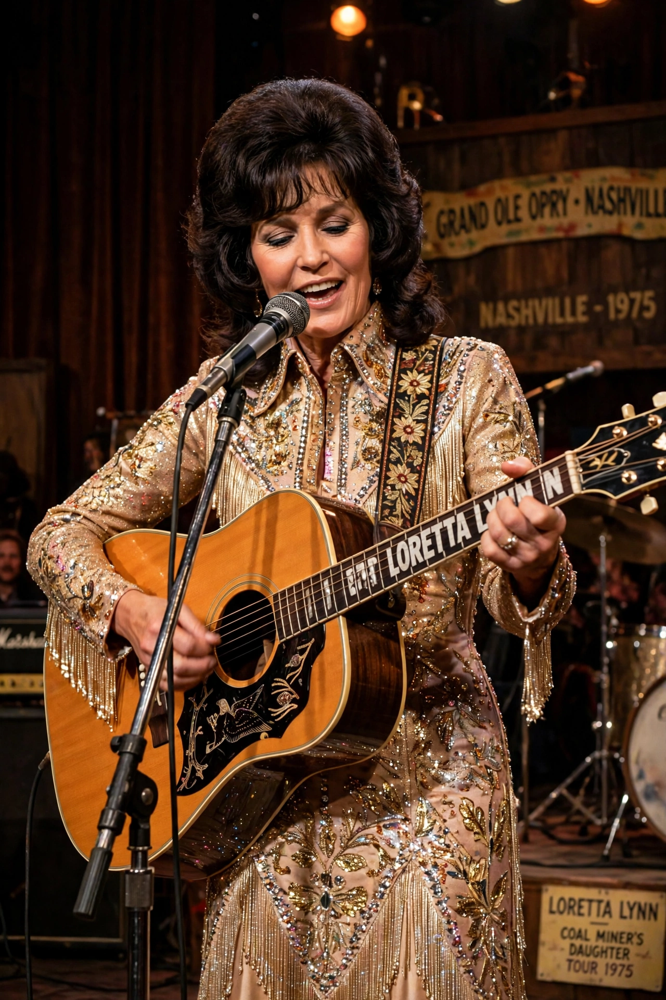

Loretta Lynn (née Webb; 14 April 1932 – 4 October 2022) was an American country music singer-songwriter. Born in Butcher Hollow, Kentucky, the daughter of a coal miner, she became known as the "Coal Miner's Daughter" and one of country music's most awarded female artists.

Lynn's frank songs about women's lives, marriage and contraception challenged Nashville conventions in the 1960s and 1970s. Her autobiography Coal Miner's Daughter became a bestseller and an Oscar-winning 1980 film starring Sissy Spacek. Her late-career album Van Lear Rose (2004), produced by Jack White, won a Grammy.
She was inducted into the Country Music Hall of Fame in 1988 and received the Presidential Medal of Freedom in 2013.